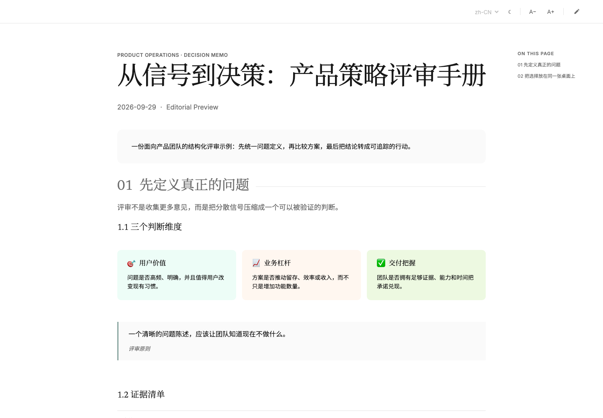
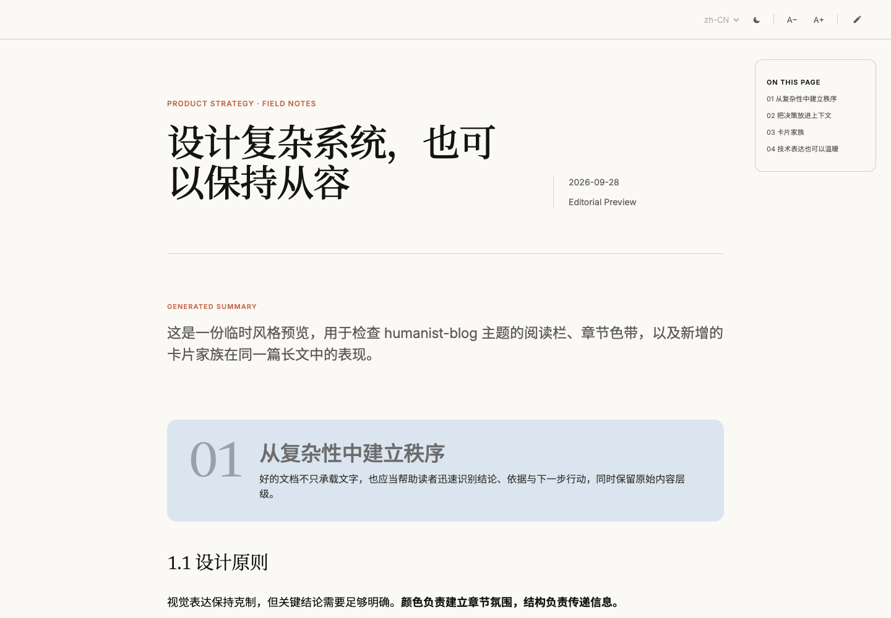
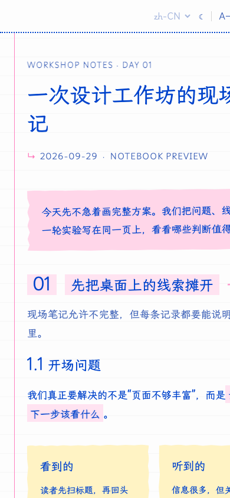
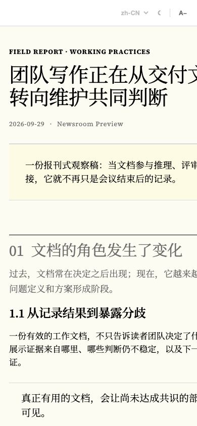

source.md3.1 KB
# 从信号到决策
评审不是收集更多意见，而是把分散信号压缩成一个可以被验证的判断。
## 三个判断维度
- 用户价值：问题是否高频、明确
- 业务杠杆：是否推动留存或效率
- 交付把握：团队能否兑现承诺
> 一个清晰的问题陈述，应该让团队知道现在不做什么。SOURCE-FAITHFUL DOCUMENT RENDERING
Turn Markdown, Word, or plain text into a polished standalone article. The skill infers structure conservatively, preserves the source, and keeps presentation separate from meaning.
git clone https://github.com/JaneJu777/editorial-document-html.git ~/.codex/skills/editorial-document-html
BEFORE → AFTER
# 从信号到决策
评审不是收集更多意见，而是把分散信号压缩成一个可以被验证的判断。
## 三个判断维度
- 用户价值：问题是否高频、明确
- 业务杠杆：是否推动留存或效率
- 交付把握：团队能否兑现承诺
> 一个清晰的问题陈述，应该让团队知道现在不做什么。
Semantic structure, not a screenshot. The output remains readable, selectable, responsive, editable, printable, and accessible.
LIVE GALLERY
Editorial
A spacious product-planning system for proposals, strategy, and decision records.
16-SECOND DEMO
A short, silent walkthrough designed for GitHub, social posts, and launch threads.
DESKTOP + MOBILE



COPY, PASTE, START
Use $editorial-document-html to turn this Markdown document into a source-faithful standalone HTML article. Infer its semantic structure, preserve every claim and link, use humanist-blog style, and verify desktop, mobile, dark mode, and print behavior. Do not rewrite or summarize the source.
THE CONTRACT
Wording, links, media, tables, order, and provenance survive the transformation.
Ambiguous content stays prose or a list instead of becoming decorative UI.
One semantic schema supports four presentation systems without rewriting the document.
OPEN SOURCE · MIT
Independent open-source project. Not affiliated with, endorsed by, or sponsored by Anthropic, OpenAI, Monocle, or any other third-party publication or technology company.